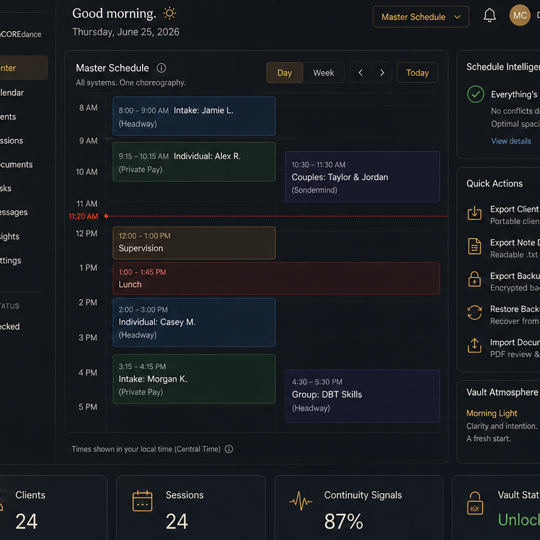
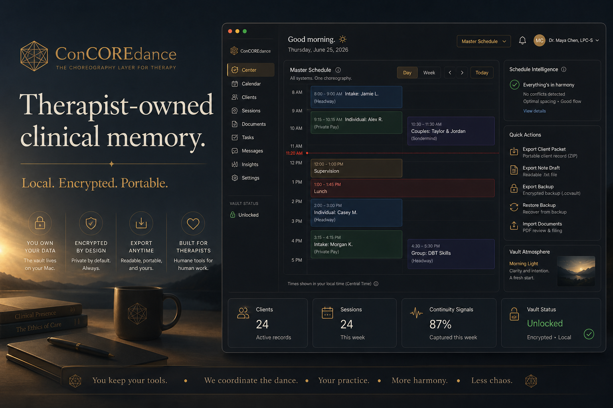
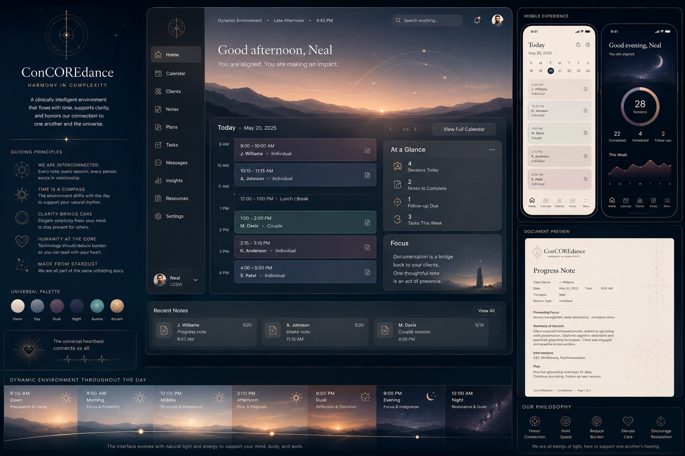
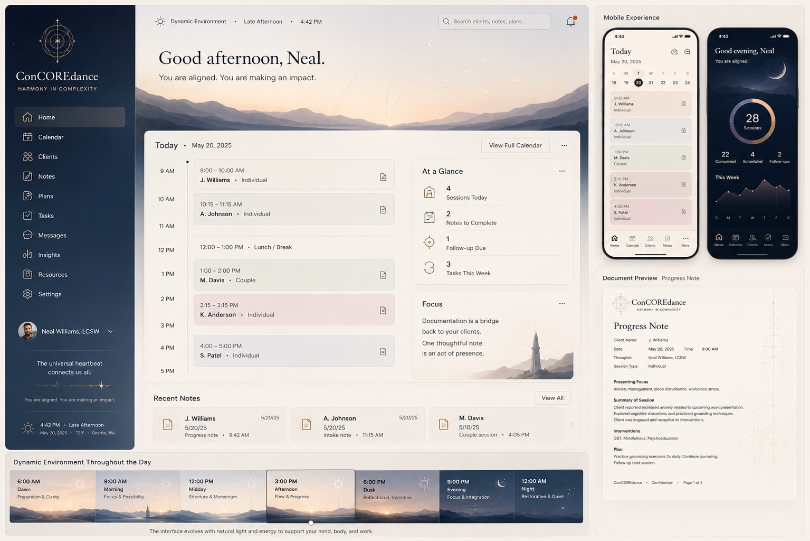
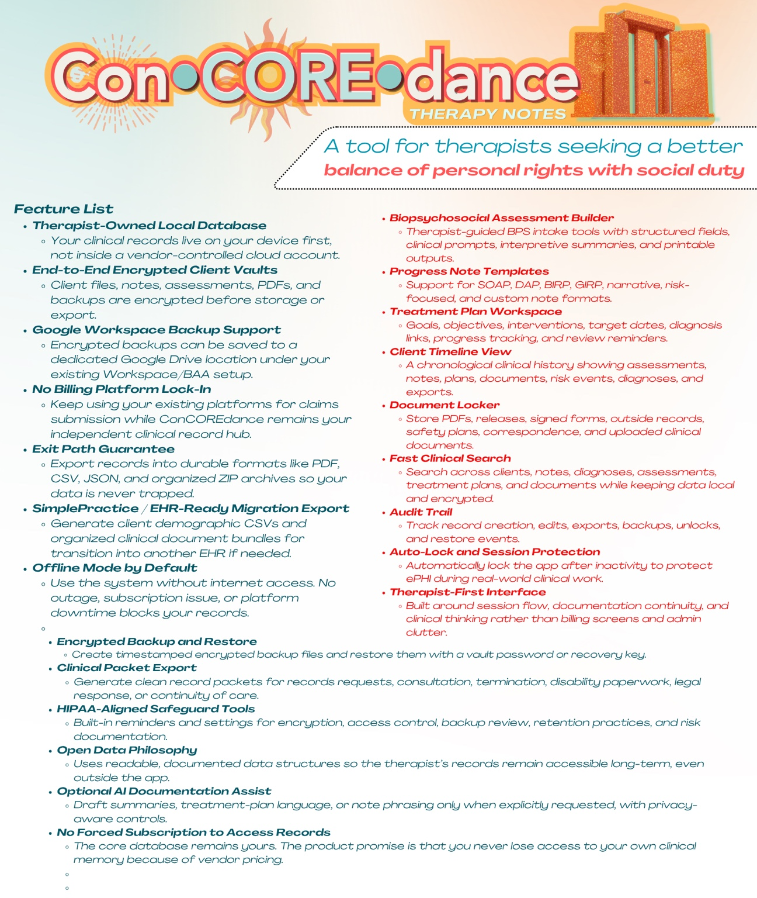

Native macOS app
The application prototype lives as a Swift/macOS project. It is where encrypted vault behavior, client records, document import, search, continuity suggestions, backup, restore, and export workflows are being built and tested.
Harmony in Complexity
Project orientation
ConCOREdance is an early native macOS prototype for keeping clinical records under the therapist’s control: encrypted local vaults, document import, continuity review, backup restore, and client packet export, with a public archive preserving the decisions behind the work.

Current direction: a calm, atmospheric clinical workspace where record ownership, portability, backup restore, client packet export, and continuity are first-class design requirements.
The project has several surfaces, and each one has a different job. The previous landing page blurred those together; this page makes the architecture of the work easier to understand.
The application prototype lives as a Swift/macOS project. It is where encrypted vault behavior, client records, document import, search, continuity suggestions, backup, restore, and export workflows are being built and tested.
The archive is the public project memory: implementation logs, design doctrine, product decisions, screenshots, visual references, and architectural transmissions. It explains how the product is evolving.
The emerging product thesis is that therapists do not need yet another disconnected tool. They need a coordination layer that can connect records, documents, calendars, signatures, backups, and exports while preserving ownership.
The alpha work centers on a practical problem: a therapist’s clinical memory gets trapped across EHRs, PDFs, portals, downloads, email attachments, and platform exports. ConCOREdance is testing a calmer path back to ownership.
Use Print to ConCOREdance or document import to move PDFs and exported records into an encrypted review tray.
Review the document, assign the client, category, date, and clinical meaning before it becomes part of the record.
Search, timelines, notes, and continuity suggestions help the therapist retain context without automating clinical judgment.
Backups and readable exports are treated as product fundamentals, not afterthoughts or subscription hostage situations.
These images are not decorative wallpaper, though they are admittedly wearing a nice coat. They show the current product atmosphere, interaction model, and design references guiding the prototype.

Refines the main-site first impression around the actual product promise: therapist-owned clinical memory, local encryption, portability, and a calm Mac workspace.

Shows the early clinical workflow spine: selected session, draft generation, continuity rail, and working clinical context.

Shows the atmospheric shell and home orientation for the therapist-owned record workspace.

Represents the local-first record posture: unlock, protect, back up, restore, and keep the clinical memory portable.

Visual reference for the product atmosphere: cinematic, calm, structured, and still clinically readable.

Explores how the same clinical system might support brighter settings without losing hierarchy or seriousness.

Summarizes the larger product ambition: records vault, imports, exports, backups, search, and trust layer.
The clinical record should remain available to the clinician, even when vendors change, subscriptions lapse, or tools get replaced.
The core vault should be usable without internet access, with encryption and backup treated as baseline responsibilities.
Export paths should be human-readable and migration-friendly: PDFs, structured data, manifests, and packages another system can understand.
Calendars, signatures, forms, cloud backups, and existing EHRs should connect through clear provider layers instead of trapping the therapist in one monolith.
Automation may assist with continuity and review, but the therapist remains the author and authority over clinical meaning.
The product should reduce cognitive load, not perform a Vegas residency inside a chart note.